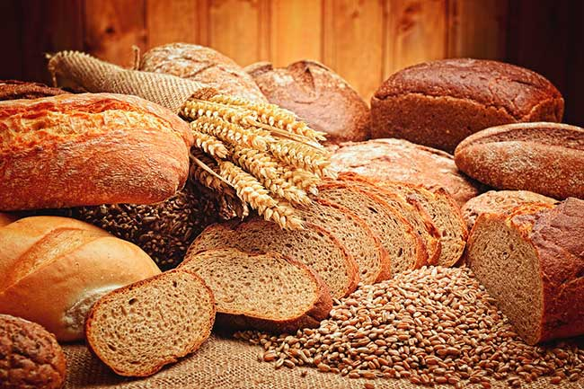
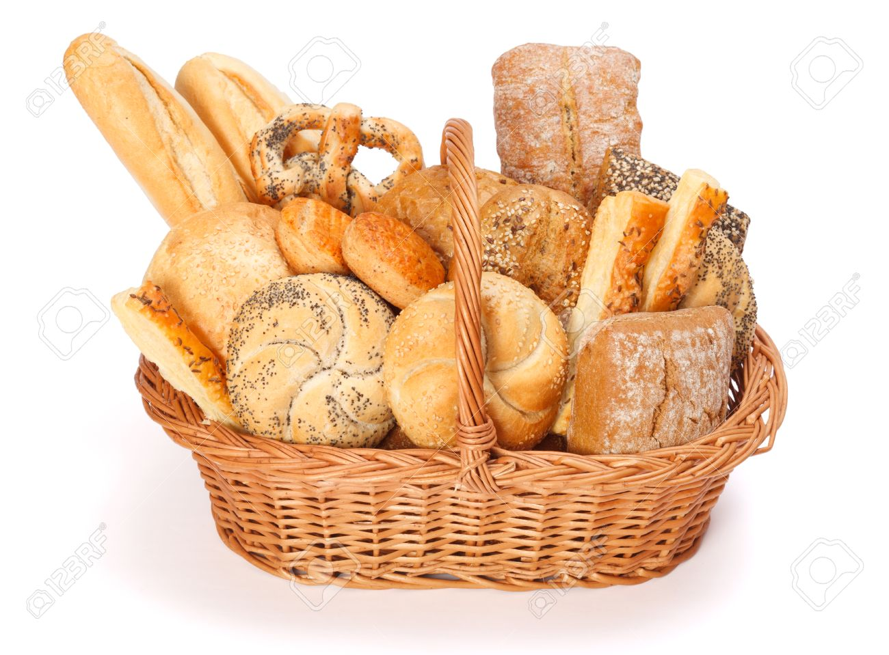
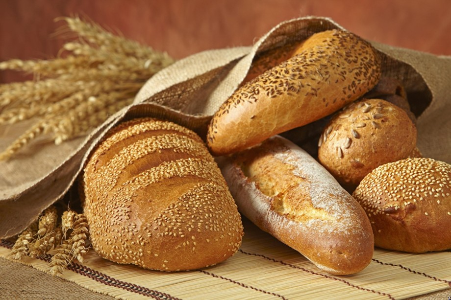

Хлеб - то что мы любим!

Полезная памятка для тех, кто любит хлеб.
Хлеб — хлебобулочное изделие без начинки, получаемое путём выпекания теста (состоящего как минимум из муки и
воды),
разрыхлённого дрожжами или закваской.
К хлебу относят такие хлебобулочные изделия,
масса которых превышает 500 г, а влажность должна быть не менее 19 %.
Для приготовления хлеба используют пшеничную и ржаную муку, реже — кукурузную, ячменную и другие.
Словом хлеб часто называют сельскохозяйственные культуры (пшеницу, рожь, ячмень и другие),
а также само зерно этих культур и изготовляемую из него муку (см. Зерновые культуры).
В некоторые сорта хлеба также добавляют специи — такие, как зёрна тмина, орехи, изюм,
чеснок, курагу и зёрнышки (семена кунжута, мака и другие). Зёрнышки также служат для украшения.
Хлеб можно есть отдельно, также его употребляют со сливочным, арахисовым или подсолнечным
маслом, вареньем, маргарином, повидлом, джемом, желе, мармеладом, мёдом, что по сути является блюдом,
носящим название бутерброд. Хлеб используется также как основа для сэндвича. Он может быть только выпеченным или
впоследствии подрумянен (например, в тостере), может подаваться почти без ограничений, комнатной температуры или
горячим. В некоторых культурах хлеб одновременно используется и как столовый прибор.
Неупакованный хлеб можно хранить в хлебнице, и так он дольше останется свежим.

Хлеб сохраняет свои полезные свойства в течение срока годности,
указанного на упаковке. Если хлеб покупается без упаковки, то его рекомендуется
хранить при комнатной температуре в чистой емкости не более одних суток. Допускается и заморозка хлеба (не путать
с хранением в холодильнике).
Срок годности зависит и от состава изделия. Ржаной хлеб, приготовленный по классической технологии с
использованием
натуральной закваски, имеет более длительный срок годности, чем пшеничный.
БОЛЬШИНСТВО ХЛЕБОБУЛОЧНЫХ ИЗДЕЛИЙ В УПАКОВКЕ ИМЕЮТ СРОК ГОДНОСТИ 3-5 СУТОК.
Если же срок годности составляет более 5 суток, то, скорее всего,
в состав продукта входят пищевые добавки, позволяющие увеличивать срок хранения.
ВАЖНО:
Существует наследственное заболевание, целиакия, при котором употребление в пищу хлеба противопоказано
из-за
содержащегося в нём глютена.
Больной должен соблюдать пожизненную безглютеновую диету.
